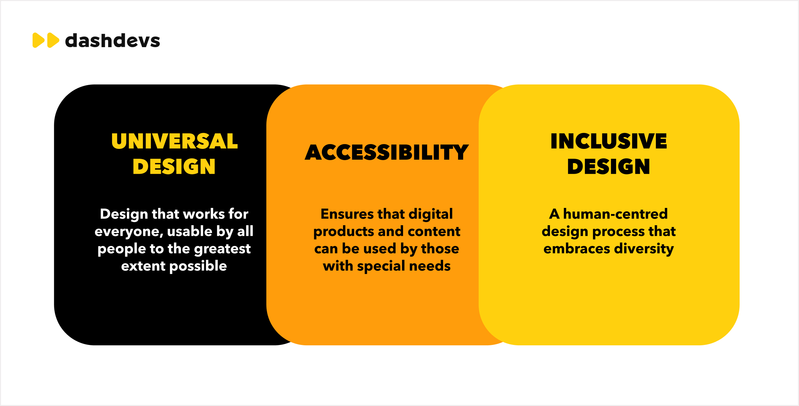

Defining inclusive design in the digital era
As technologies are becoming more and more central in daily life, and the expansion of tech market is enlarging even more, there’s the need to provide to everyone a simple approach of any digital technologies in a digital society.
When it all begin
Why the web design needed to be changed.
It all started back then, when computers were slow machines with low comprehension of inputs of the user with a very complex interface. In a nutshell, the computer accessibility was quite complicated and difficult to understand. As the spectrum of human diversity and capacities deepen, also the design approach evolved too. With the birth of World Wild Web the challenge was set: many web pages had changed styles and tools to be more understandable and approachable for users. By the end of 90’s there was an historical improvement with the publication of “Web Accessibility guidelines” where a crucial standard was set and developers could use a shared framework . Features like keyboard navigation, alternative text for images and other tools that are now the default set of a web page were introduced. All for one goal: make web sites easier.
Key accomplishment
From “designing for disabilities” to “design for diversity”
Another key accomplishment was reached when web designers shifted from “designing for disabilities” to “design for diversity”. Before, designers were designing special features with the only purpose to help disabled people to use interface and other technologies. Even though it was the first and crucial step to help these people, these disability-specific adaptations were targeting disabled people as different. A few times later, designers realized that a bunch of more people could get benefits from some disability-specific adaptations and conclude that the variants they created could be extended for more people.
Voice control features designed in principle for people with motor disabilities, nowadays they become convenient for multitasking parents with their hands full; or drivers needing an hand - free operation. So diversity instead of disability.

Everyone can have disabilities
Difference between physical disability and modern disability
It is also fair to say that nowadays everyone can have a disability based on the personal condition or the environment they’re in: a commuter in a bumpy bus, a broken arm, or else; which differs from the historical definition of disability which marked a person as fundamentally phyical different from a normal one. With the new definition a person cannot do their task properly for any reason, can be "disabled". This is why everyone can benefits from the upgrade of digital system performances: to make everyday challenges smoother. In the modern world the disability is not something you are born with until you are in an environment not thought for your needs or your personal shortcomings.
A web for everyone
Who is the one in charge to conform?
This change of mind include a different approach in the code script: it’s not anymore the individual in charge to conform to others but quite the opposite, it’s the society who must conform to itself; hence the web must change for users and users are not required to change or acknowledge things to understand the web. We can say that now the web is more of "full set of people" oriented and not only for those few smart genius or computer geeks. We can create now a digital space that welcome everyone, regardless the ability.
Sources
- Dale Cruse & Denis Boudreau et al. Inclusive Design for accessibility. Year 2025. book.pdf